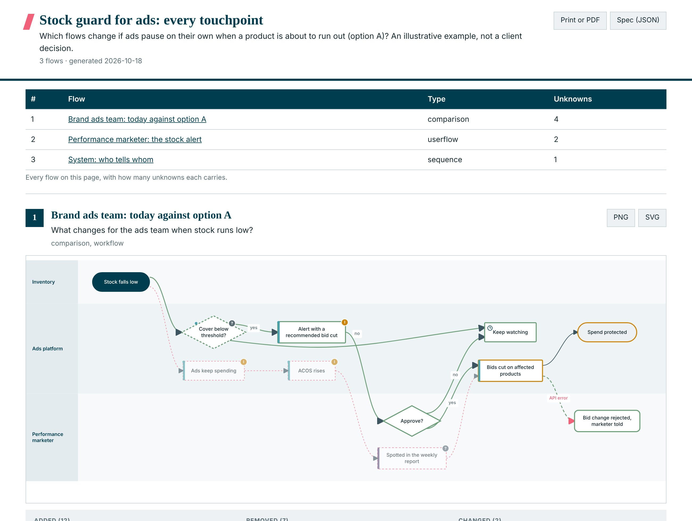

Diagrams
Every flow a feature touches, on one page you can print, paste and export.
On this page
Diagrams
Built in. A feature rarely changes one flow, so /diagram draws every flow it touches on one static page: the shopper's journey, the team handoff, the system calls, and today against the option. No npm, no network, no separate tool.

What one page holds
| Part | What it is |
|---|---|
| Header | The feature or decision, the question the page answers, the session it came from, and Print or PDF and Spec (JSON) buttons |
| Summary table | Every flow on the page with its type and unknowns count, each linking to the flow. Shown when there is more than one flow |
| One section per flow | Title, question, the picture fitted to the page width, and PNG and SVG buttons |
| Under each flow | A legend, evidence counts, unknowns, assumptions, out of scope, and a notes table with every evidence tag, source quote and note |
| Comparison flows | Today against an option drawn once, added steps in green, removed in pink, changed in amber, with every change listed |
| Type | Answers |
|---|---|
| userflow | What one user does, screen by screen. One per persona whose journey changes |
| workflow | What happens in what order, across teams. Swimlanes, decisions, failure paths |
| sequence | Who talks to whom over time for one case, with alt, opt and loop fragments |
| dataflow | Where a record travels, who changes it, where personal data moves |
| lifecycle | The states a thing can be in and what moves it between them |
| architecture | Who calls what, what stores the data, where the boundaries are |
Evidence on the picture
A step can carry V, I or U, the same tags as everywhere else. V needs a quote, and the renderer checks the quote against the file exactly as the citation checker does: a quote that is not there stops the render. U draws a dashed outline and a question mark, so a gap is visible instead of filled. Every unknown is listed under its flow as a question for the next client session.
Three ways to get one
/diagram out-of-stock substitution, every touchpoint /diagram sessions/2026-10-18-substitution-7F.md /diagram compare sessions/2026-10-18-substitution-7F.md
And automatically: a council session at Tier 2 or 3 draws one page when the recommended option changes a workflow, journey, system, data path or state. /handoff draws every option's user flows. The page is static by design: it prints, pastes into Confluence and exports to slides. Edit the JSON spec beside it and the hook re-renders the page. /diagram demo renders an example of every type.